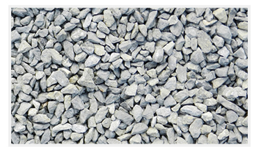
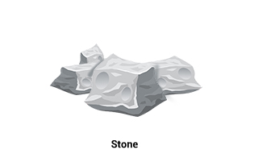
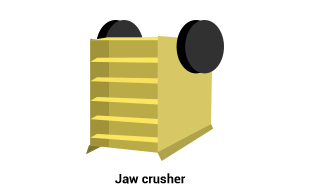
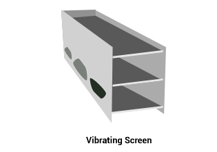
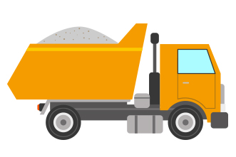

1 IMPORTANT POINTS
Q What are coarse aggregates?
A Coarse aggregates are crushed stones which are used in the construction to make concrete. The size of coarse aggregates vary from 4.75 mm to 40 mm.

Q How coarse aggregates are made?
A Coarse aggregates are made using 3 steps.
STEP 1 Solid rocks is extracted from natural resources

STEP 2 Extracted rocks are crushed with a rock crusher to get desired fragmented size

STEP 3 The fragmented mixture is screened to get the final product of particular size

Q How coarse aggregates are sold?
A Coarse aggregates are sold in cubic foot (cft) or ton depending on the supplier. One ton of coarse aggregates are 23.5 cubic foot (cft) in volume approximately.
Q How coarse aggregates are delivered?
A
Generally, coarse aggregates are delivered in two truck load sizes
- 20 ton truck load in 6 wheeler truck.
- 30 ton truck load in 10 wheeler truck.

2 TYPES
Q What are the different types of coarse aggregates available in the market?
A
| Size wise classification | |||
|---|---|---|---|
| 6 mm | 12 mm | 20 mm | 40 mm |
| Composition wise classification | ||||||
|---|---|---|---|---|---|---|
| Single size aggregates | 85% to 100% of the material of same size | |||||
| Graded aggregates | A range of sizes in its composition | |||||
3 BRANDS
There are companies like Bharathi, Robo, Thriveni which manufacture branded coarse aggregates. Apart from these companies, there are many local manufacturers.
4 STORAGE AND HANDLING
Q How to store coarse aggregates on site?
A Coarse aggregates should be placed on a dry patch of ground. Its pile should not be mixed with mud, clay or soil. Different sized coarse aggregates should be stored in different stacks.
5 COSTING AND ESTIMATION
Q What is the cost of the coarse aggregates in the market?
A Coarse aggregates cost around Rs.800 per ton.
Q What is the estimated amount of coarse aggregates to construct a house?
Enter your built up area and number of stories in the following form and we will calculate the tentative amount of of coarse aggregates required.
Enter built up area (in sq. ft.)
Enter number of stories
The tentative amount of coarse aggregates required 0.00 ton